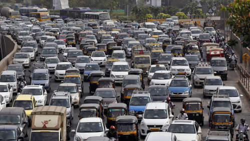
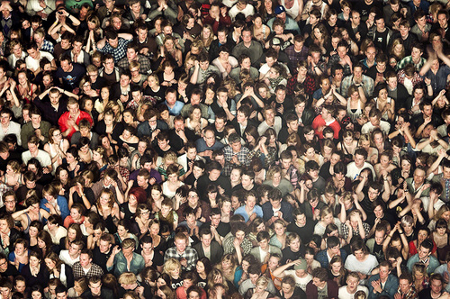
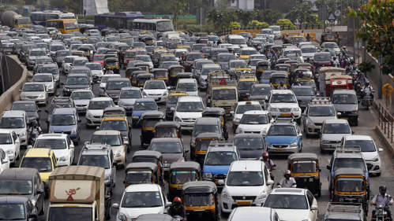
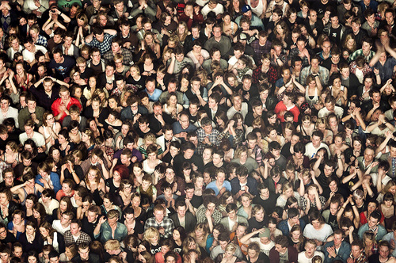
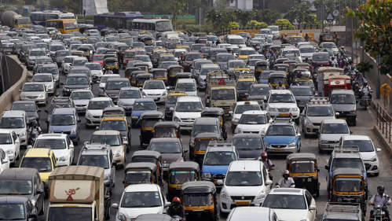
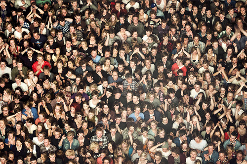

Søylediagram
Nedenfor blir det vist grafisk hvor stor utvikling i populasjonen av mennesker på jorda gjennom årene.| År | Antall milliarder mennesker i verden |
| 2000 | 6.170 |
| 2010 | 6.962 |
| 2020 | 7.754 |
| 2030 | 8.546 |
| 2040 | 9.338 |
| 2050 | 10.130 |
 



| År | Antall milliarder mennesker i verden |
| 2000 | 6.170 |
| 2010 | 6.962 |
| 2020 | 7.754 |
| 2030 | 8.546 |
| 2040 | 9.338 |
| 2050 | 10.130 |

